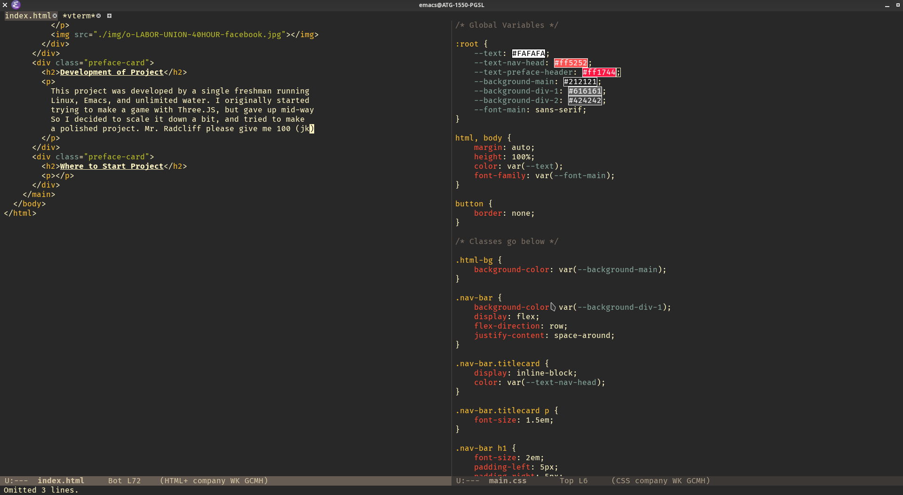

Topic of Project
The purpose of this project is the showcase the history and development of worker's rights from the very beginning to the present day through 3d models and essays. This project is split into 5 chapters,
- History of the Labor Movement
- Origins of the Labor Movement
- Gains of the Labor Movement
- Legacy of the Historical Labor Movement
- The Modern Labor Movement
Summary of Project
At the start of the first Industrial Revolution and the migration of workers from farms to cities. The newly strengthened "Industrial-Capitalist" class never bothered to give their workers the dignity they deserved. Hence, the rise of left-wing and progressive unions! Through struggle and preserverence, we reap the things we now take for granted. For instance, the 40 hour work week, the 8 hour work day, labor strikes, safe conditions (questionable), and even worker benefits.
Development of Project
This project was developed by a single freshman running Linux, Emacs, Blender, and unlimited water. I originally started trying to make a game with Three.JS, but gave up mid-way So I decided to scale it down a bit, and tried to make a polished project. Mr. Radcliff please give me 100 (jk)
Where to Start Project
Click on Chapter 1 at the top bar.